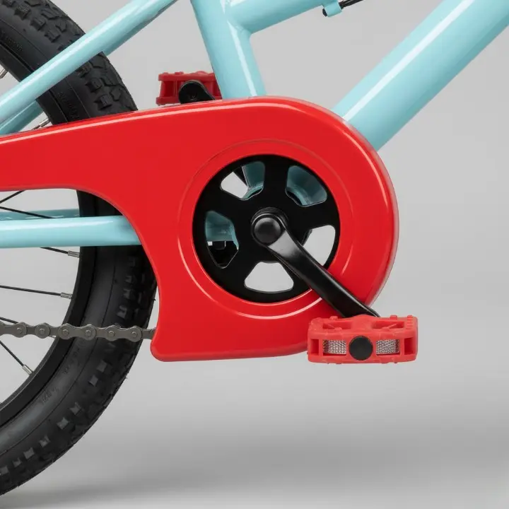

A bicycle is more than just a toy. It’s a rite of passage, a child’s first taste of true independence. It’s the whir of wheels on a quiet lane in Alwal, the triumphant feeling of mastering balance in a Kompally park, and the start of countless family adventures.
As parents, we want that experience to be perfect. But faced with endless options, sizes, and features, making the right choice can feel daunting. A bike that’s too big is unsafe; one that’s too heavy is no fun. Since 1989, our family at Deccan Cycle Mart has helped generations of Secunderabad parents navigate this decision. This is our definitive guide—everything you need to know to find a bike that you can trust, and your child will adore.
In This Guide, You'll Learn:
- ✓ The #1 Mistake to Avoid: Why "growing into it" is a safety risk.
- ✓ The Perfect Fit Method: A simple 3-step check for any child.
- ✓ A Non-Negotiable Safety Audit: The 5 key features every kids' bike must have.
- ✓ Helmet Fitting Made Easy: The simple "2-V-1" rule for total protection.
📏 Step 1: The Perfect Fit – Sizing for Safety & Confidence
The foundation of safe and happy cycling is the right size. An oversized bike is difficult to steer and even harder to stop, leading to frustrating falls that can discourage a new rider. Instead of buying for the future, buy for right now.
The 3-Step In-Store Fit Check
Charts are a good starting point, but nothing replaces a real-world test. At our cycle shop in Bollaram, we perform this simple 30-second check with every child:
- Stand-Over Clearance: With the child standing over the bike's frame, there should be a 1-2 inch gap between the top tube and their inseam. This is crucial for them to dismount quickly and safely.
- Seated Position: When sitting on the saddle, the balls of their feet should comfortably touch the ground. This provides the stability needed to start and stop without fear.
- Handlebar Reach: Their arms should be slightly bent when holding the handlebars, allowing for comfortable steering without overextending.
🛡️ Step 2: The Non-Negotiable Safety Audit
A great kids' bike is built with safety at its core. When you're inspecting a potential bike, look beyond the shiny paint and check these five critical components.
1. Full Chain Guard: A Must-Have Protector
An enclosed chain guard is not optional. It completely covers the chain, preventing loose clothing, shoelaces, or fingers from getting caught. This simple feature prevents the most common and painful bike-related accidents.
2. Lightweight Frame: Control is Key
Imagine trying to maneuver something that’s half your body weight! A lighter bike (typically aluminum over steel) is easier for a child to handle, pedal, and pick up after a tumble. More control means more confidence.
3. Professional Assembly
A bike from a box is a bike with risks. Every bicycle we sell is assembled and fine-tuned by our professional mechanics to ensure brakes are aligned, bolts are tightened, and everything is perfectly safe from the very first pedal stroke.
🎉 Step 3: Beyond the Bike – Essential Gear & Fun Accessories
The right gear is just as important as the right bike. It's about combining uncompromising safety with the fun that gets kids excited to ride.
The Helmet: A Perfect Fit with the "2-V-1" Rule
A helmet only works if it's worn correctly. At our cycle accessories store in Secunderabad, we teach every family this simple check:
- 2 Fingers: The helmet's brim should sit two fingers' width above the eyebrows.
- V-Shape: The side straps should form a snug 'V' just under each earlobe.
- 1 Finger: The chin strap should be tight enough that only one finger can fit underneath.
⭐ The Deccan Difference: Your Local Cycling Partner
Why choose us? Because we're more than a store—we're part of the community. We provide services designed for busy Secunderabad families:
- ✓ Free Home Pick-up & Drop for Service: We make repairs completely hassle-free.
- ✓ Easy Exchange & Upgrade Offers: As your child grows, their bike can too.
- ✓ Expert, Unbiased Advice: Our only goal is to find the safest, best-fit bike for YOUR child.
🤔 Your Questions, Answered
When should my child switch from training wheels to two wheels?
We recommend starting with a balance bike to bypass training wheels altogether! If using them, remove them as soon as your child can comfortably glide with their feet up. The key is balance, not pedaling.
How much should I expect to spend on a quality kids' bike?
A good quality, safe kids' bike typically ranges from ₹4,000 to ₹10,000. While cheaper options exist, they often use heavier materials and less reliable components. Investing a bit more ensures a safer, more enjoyable, and longer-lasting ride.
Do you offer repairs for kids' bikes?
Absolutely! We are a full-service cycle repair shop in Bollaram. From flat tires to brake adjustments, we offer a free pick-up and drop service in Secunderabad, Alwal, and Kompally to make it completely hassle-free.
Read More From Our Blog
Secunderabad Bicycle Buying Guide
Choosing the right adult bicycle is just as important. Our guide covers everything from mountain bikes to city cruisers.
Expert Cycle Repair & Maintenance in Secunderabad
Learn about our hassle-free repair services, including our popular free home pick-up and drop-off.